PROFESSORES
Conteúdo técnico e prático para aplicar com seus alunos.
Um guia prático e completo para bateristas, professores, estudantes, profissionais e escolas de música que desejam evoluir com mais saúde, técnica e longevidade.
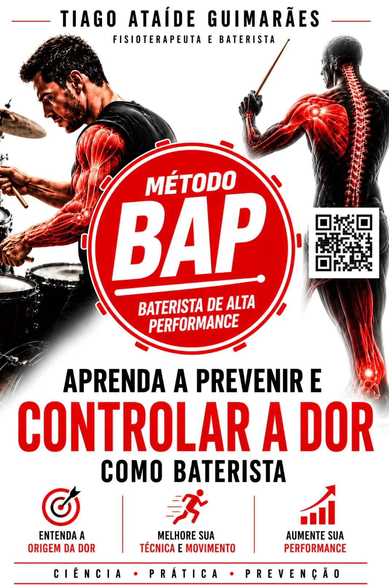
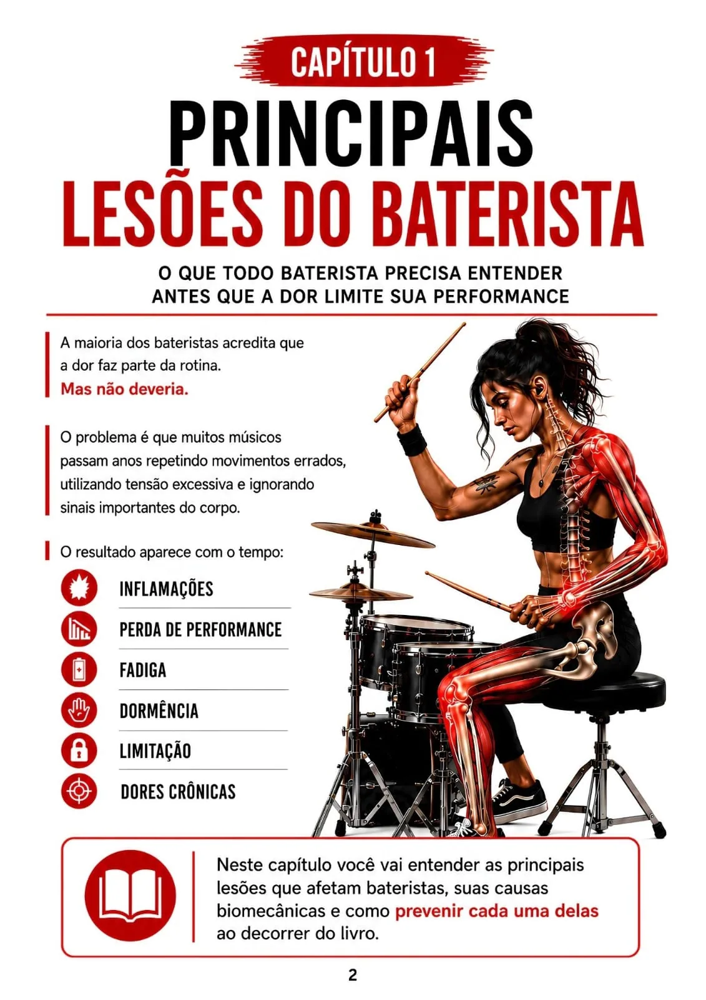
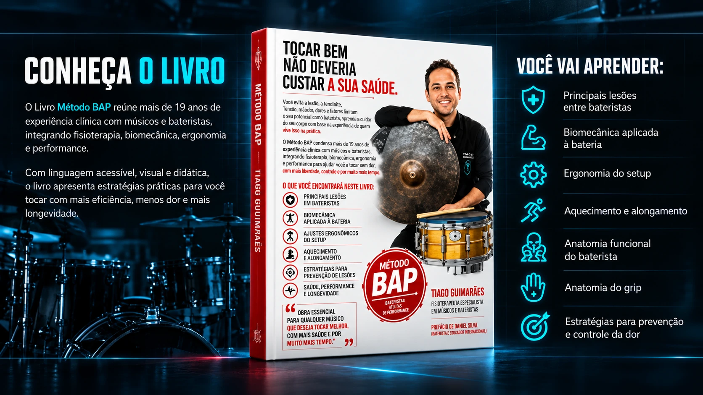
O Livro Método BAP integra fisioterapia, biomecânica, ergonomia e performance para músicos e bateristas.
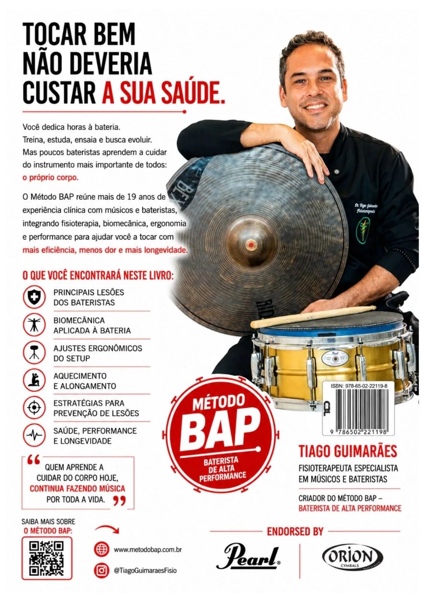
Principais lesões · Biomecânica · Ergonomia · Aquecimento · Anatomia · Prevenção
Este livro é um recurso essencial para todos que vivem a bateria.
Conteúdo técnico e prático para aplicar com seus alunos.
Material de referência para cursos e formações.
Aprenda desde o início a tocar com mais saúde.
Mais performance e longevidade na carreira.
Para quem quer tocar por muitos anos, sem limitações.
Uma prévia dos assuntos e capítulos abordados na publicação. Conheça alguns capítulos e ilustrações do livro.
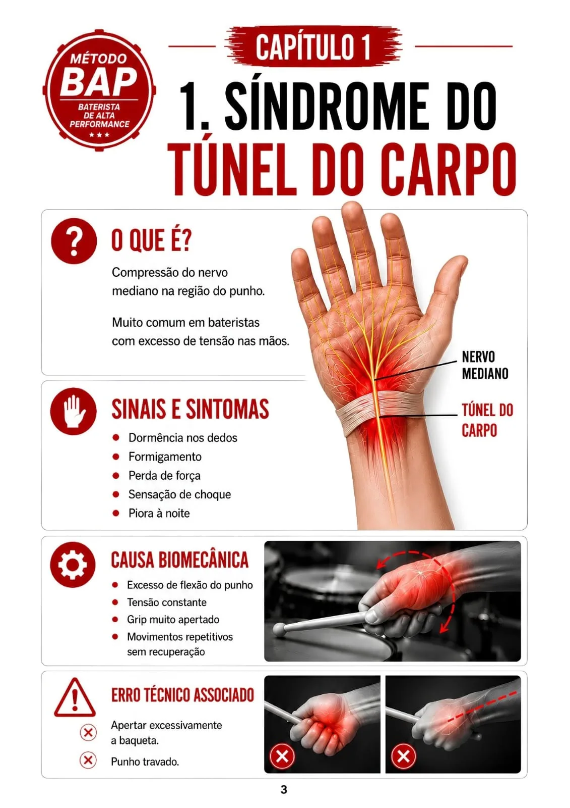
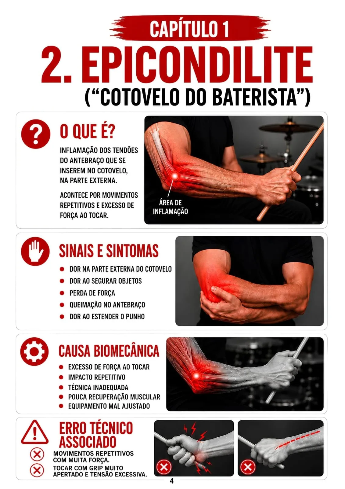
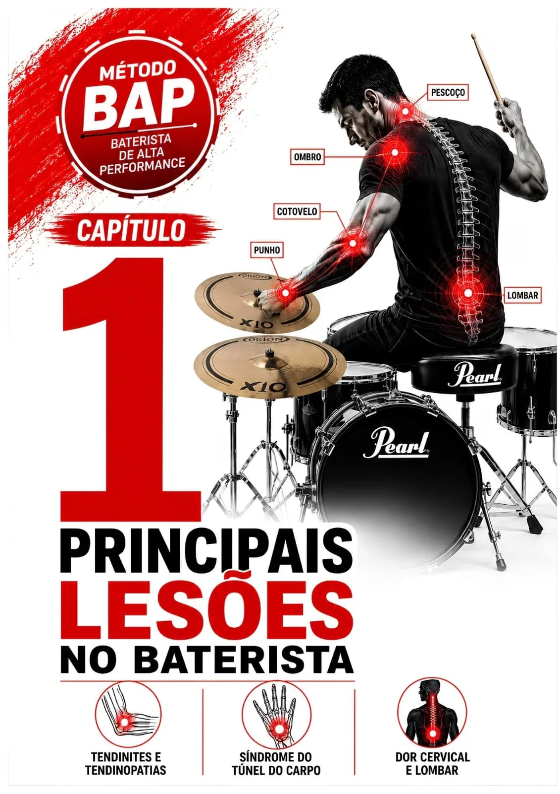
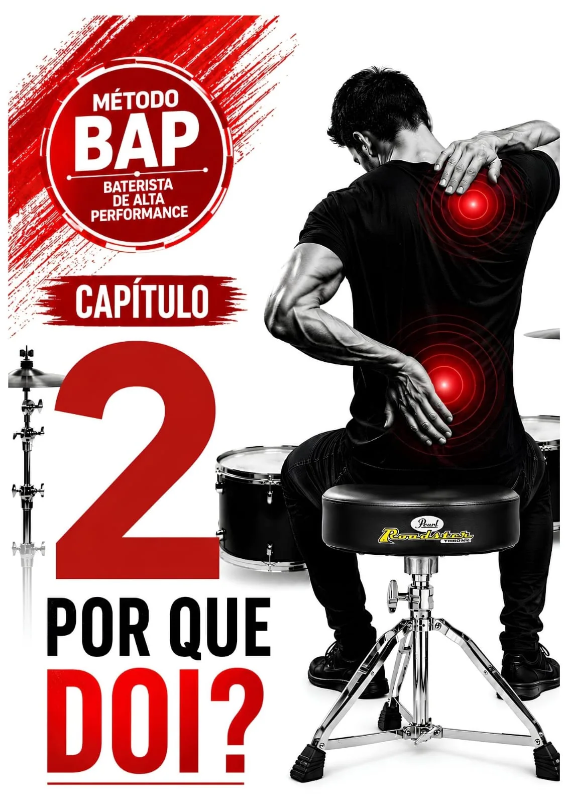
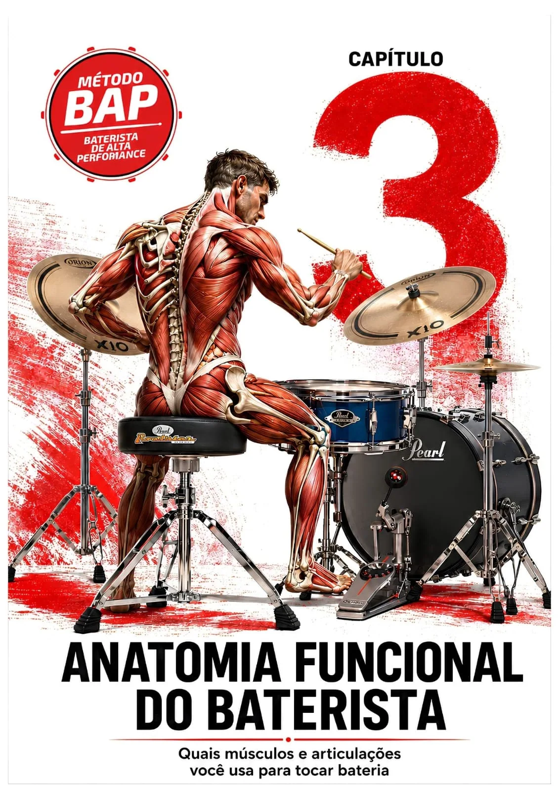
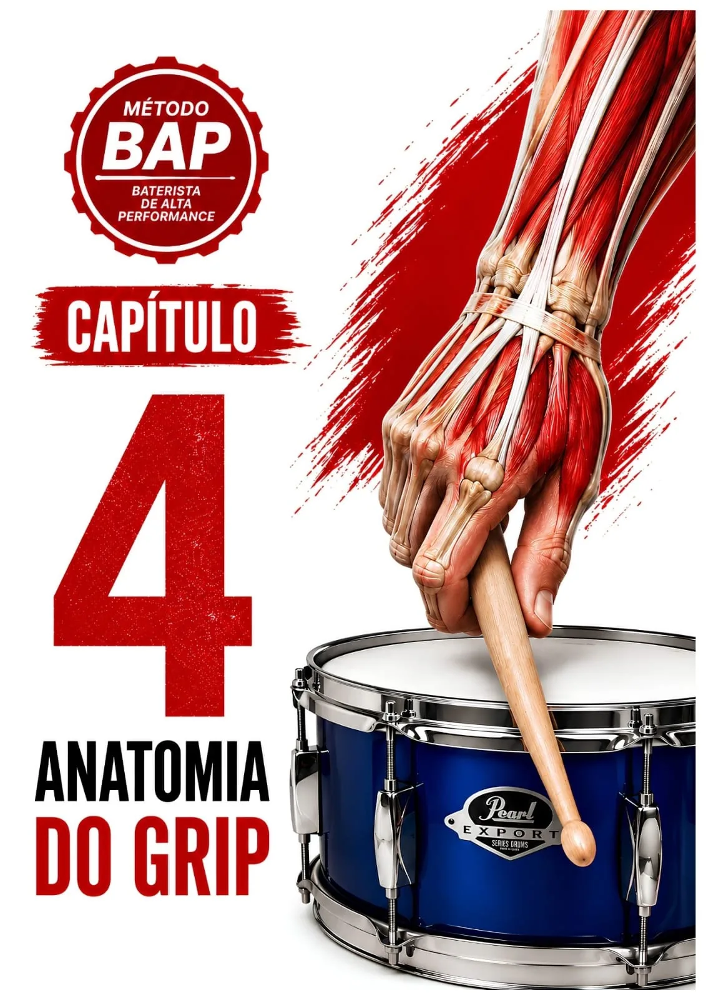
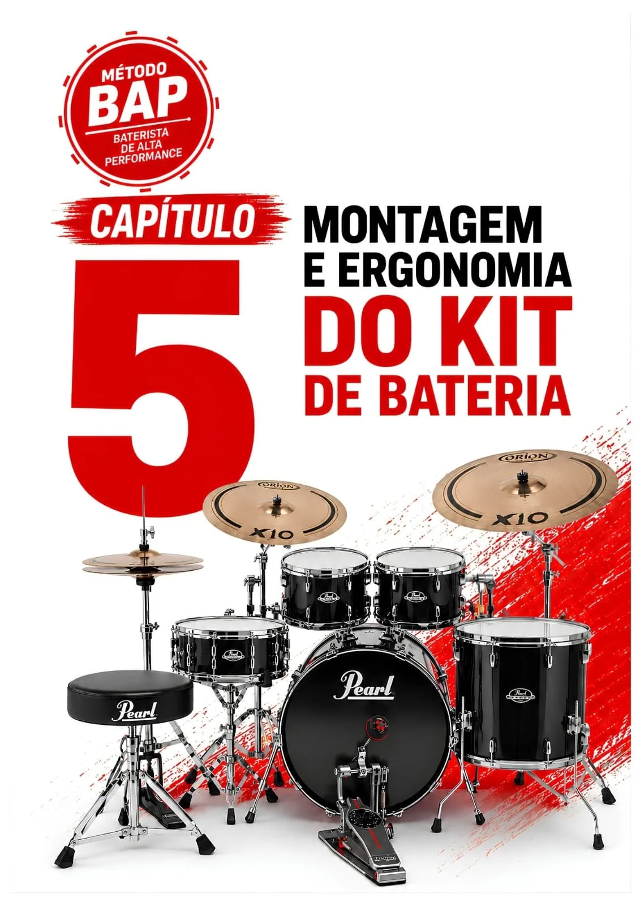
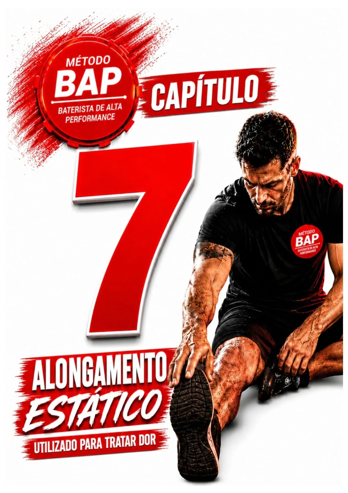
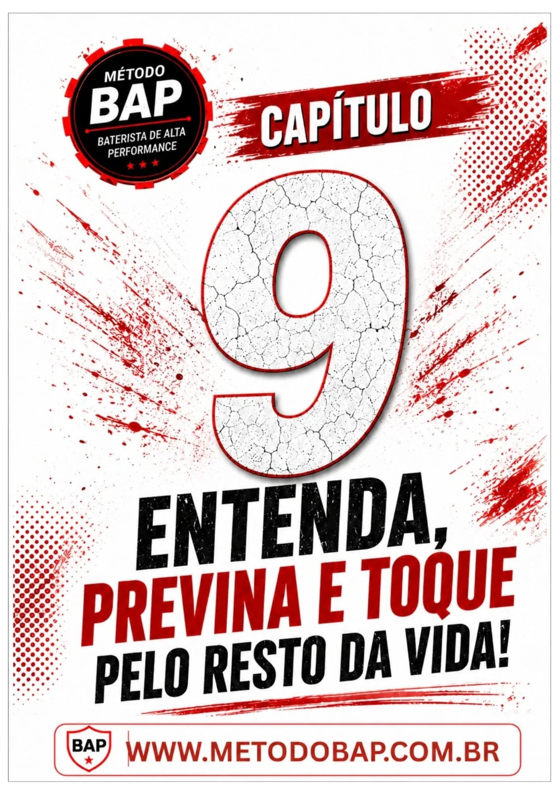
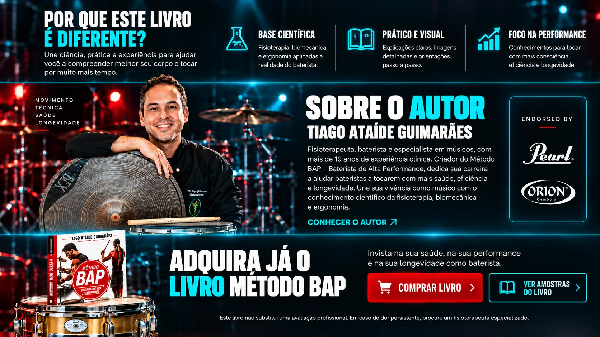
Une ciência, prática e experiência para ajudar você a compreender melhor seu corpo e tocar por muito mais tempo.
Fisioterapia, biomecânica e ergonomia aplicadas à realidade do baterista.
Explicações claras, imagens detalhadas e orientações passo a passo.
Conhecimentos para tocar com mais consciência, eficiência e longevidade.


Invista no conhecimento sobre sua saúde, sua técnica e sua longevidade como baterista.